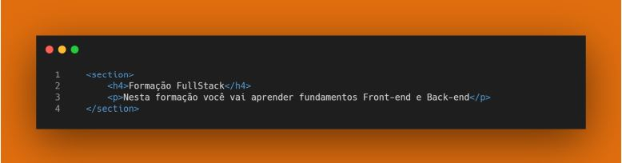

Historia do HTML
O HTML foi proposto no início de 1990 e recebeu novas funcionalidades ao longo do tempo
visando atender às novas exigências de comunicação e representação da informação. Atualmente
o padrão HTML 5 é amplamente utilizado, no momento já temos o padrão HTML 5.3, lançado em
janeiro de 2021.
Conheça mais sobre o HTML, visitando o site da Organização Mozilla, neste site você
vai encontrar um manual completo e detalhado com exemplos:
Mozilla.org - HTML
Se desejar praticar e avançar mais em seus estudos o site W3Schools oferece uma ferramenta
para codificar e visualizar os resultados:
W3Schools.com - HTML
O objetivo do HTML é oferecer um padrão compreensível por nós humanos e que pode ser
interpretado pelos navegadores. Um dos fatores responsáveis pelo sucesso do HTML é sua
simplicidade de desenvolvimento, pois exige apenas um editor de texto e um navegador web.
Além disso, ao navegar por um site qualquer na internet podemos facilmente explorar o código
HTML que está sendo apresentado. Para explorar o código de uma página qualquer vamos utilizar
o DevTools.
O HTML é uma linguagem interpretada pelos navegadores. Mas o que exatamente significa isso?
Significa que todas as tags que desenvolvemos são executadas e geram algum resultado para ser
exibido ao usuário. Isso significa que as tags não são “validadas”, nem mesmo são reportados
erros caso ocorram. Este é um fator que define o HTML como linguagem de marcação e não como
linguagem de programação. Uma linguagem de programação passa por um processo de validação
dos comandos, onde cada um deles é executado podendo ou não gerar uma saída.
De forma resumida isso significa que quando nosso código HTML estiver incorreto,
não vai apresentar erro, simplesmente não vai funcionar .
Existem diversos padrões que os programadores podem adotar, então é fundamental você
conheça bastante a linguagem HTML pois vai se deparar com códigos desenvolvidos por outros
programadores ao longo de sua jornada profissional e antes mesmo de executar o código é
importante que você faça a validação do mesmo e entenda o que o código deve realizar.
Introdução à HTML
HTML é uma sigla para representar o termo Linguagem de Marcação de HiperTexto,
originado do inglês HyperText Markup Language. Portanto a HTML é uma linguagem para criar
documentos com textos e outros elementos do meio digital, tais como imagens, sons e vídeos.
Todos estes elementos serão ligados por meio de tags ou elementos, que vamos estudar nesta
unidade/disciplina. As tags são recursos fundamentais da HTML. Abaixo segue exemplo de uma
tag
<img src="foto.jpg">
A tag apresentada acima é a tag img, que indica uma abreviação de image, que traduzindo é
imagem. Note que a tag img tem o atributo src, que indica uma abreviação de Source , que
traduzindo é origem. Os atributos são recursos presentes na maioria das tags.
Resumindo o conceito de tag com relação ao HTML:

→tag: etiqueta, rótulo ou marcação, exemplo < img … > é um exemplo de tag de imagem
→atributo:característica que desejamos especificar, geralmente um atributo é seguido por sinal de igualdade, exemplo src=
→valor:geralmente fica entre aspas duplas. Em alguns casos, o valor pode ficar entre aspas simples, dependendo do padrão adotado. Vamos manter o padrão de aspas duplas.
|
Notas importantes ♦ Perceba que a tag inicia com o símbolo de menor, ou seja ≷. Observe também um sinal de maior no final, ou seja >. ♦ Todas as tags tem uma representação de finalização opcionais. Veremos ao logo desta disciplina/unidade tais particularidades. ♦ Conheça mais tags HTML visitando este site: W3Schools.com |
Estrutura Básica
Agora que já sabemos sobre tags, vamos explorar a estrutura básica de um documento HTML.Um documento HTML deve ter a declaração da tag inicial < !DOCTYPE html >, embora um documento HTML possa ser interpretado sem a declaração, ela é altamente recomendada. Abaixo segue tag DOCTYPE:

A tag DOCTYPE pode ser escrita em minúscula, ou seja, não é case sensitive. Algumas linguagens
exigem a escrita usando letras maiúsculas em certas situações e não funcionam caso escrevemos
uma letra minúscula no lugar de uma letra maiúscula, por exemplo em JavaScript uma variável
definida como pi é diferente de uma variável definida como PI. Podemos afirmar que HTML não é
case sensitive, ou seja, tanto faz se escrevermos com letra maiúscula ou minúscula, já a
linguagem JavaScript é case sensitive. Sempre que possível vamos obedecer ao padrão e digitar
corretamente as letras.
A tag <html> é a primeira a ser aberta, antes dela sempre teremos apenas a tag !DOCTYPE. A
tag <html> é fechada na linha 11, da seguinte forma </html>. A tag img não fechamos, apenas
abrimos. Mais adiante veremos exemplos de tag img com fechamento.
A tag <head> é utilizada para definir configurações do cabeçalho de nossa página tais como seu
conteúdo, título, palavras-chave e outras configurações que são processadas logo que a página é
carregada.
Na tag <head> temos também inclusão de arquivos CSS e JS.
Os títulos são representados dentro da tag <title> que por sua vez estão dentro da tag <head> e
são considerados pelos motores de busca, isso significa que se você deve sempre criar títulos
relevantes e criativos para suas páginas.
Um documento HTML deve ter apenas uma tag <html>. Tanto a tag <head> quanto a tag
<body> são únicas por padrão
A próxima tag que vamos explorar é <body>. Nela podemos colocar tudo que desejamos exibir
para nosso usuário, tais como textos, figuras e links. No exemplo colocamos dentro da tag
<body> a tag <p> que representa um parágrafo no HTML e tag <img> que utilizamos para
adicionar uma imagem ao HTML.
Semântica HTML
As tags HTML devem sem utilizadas de forma que seja compreensível para nós seres humanos e
por computadores. Dar semântica a um documento significa simplificar sua codificação e fazer
com o documento seja compreensível sem muito esforço. As páginas HTML são interpretadas por
outras aplicações, pois uma vez estando “hospedadas” e acessíveis, qualquer aplicação pode abrir
nossa página e obter as informações que precisa. Para organizar as informações de uma página
existe um grupo e elementos, listados abaixo:
<header>
<section>
<article>
<nav>
<aside>
<main>
<figure>
<footer>
<a>
<em>
<strong>
<cite>
<q>
<time>
A descrição e utilização de cada uma dessas tags estará disponivel em nosso Glossário HTM no
Class.
Veja Exemplos para cada uma destas tags semânticas:


